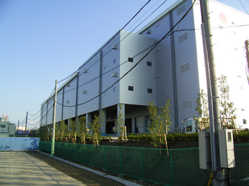

物流倉庫開発
| 施 設 名： | 岩槻物流センター |
|---|---|
| 稼働開始日： | 2008年3月稼働 |
| 所 在 地： | 埼玉県さいたま市岩槻区 |
| 建 物： | Ａ棟：鉄骨造2階建 延床面積：5,750坪(2011年4月焼失) |
| Ｂ棟：鉄骨造2階建 延床面積：3,292坪 | |
| 主な用途： | 特別積合せ貨物運送事業 |
| 業務内容： | 総合企画（開発支援、施設基本計画、テナント工事計画） |
| 施 設 名： | 入間物流センター |
|---|---|
| 稼働開始日： | 2008年5月稼働 |
| 建 物： | Ａ棟：鉄骨造2階建 延床面積：2,428坪 |
| Ｂ棟：RC造4階建 延床面積：5,474坪 | |
| 主な用途： | 特別積合せ貨物運送事業 |
| 業務内容： | 総合企画（農地転用、適合証明、建物基本計画、運用設計支援） |
| 施 設 名： | 船橋物流センター |
|---|---|
| 稼働開始日： | 2009年7月稼働 |
| 建 物： | 4階建て、延床面積 11,800坪 |
| 主な用途： | 通販センター |
| 業務内容： | 新設プロジェクトのコンサルタント（施設選定、改修工事監修、マテハン設備監修等） |

| 施 設 名： | 成田芝山物流センター |
|---|---|
| 稼働開始日： | 2009年10月稼働 |
| 建 物： | 鉄骨造平屋建（一部4階） 延床面積 4,906坪 |
| 主な用途： | 平屋－航空貨物輸出センター 4階建部－保税貨物倉庫 |
| 業務内容： | 総合企画・設計監理（農地転用、開発申請、基本計画～実施設計） |

| 施 設 名： | 入間物流センター |
|---|---|
| 稼働開始日： | 2010年1月稼働 |
| 建 物： | 4階建て、延床面積 5,400坪 |
| 主な用途： | 特別貨物積合せ運送事業 |
| 業務内容： | 総合企画（農地転用、適合証明、基本計画、テナント工事支援） |
| 施 設 名： | 入間インター 給油所 |
|---|---|
| 稼働開始日： | 2011年10月稼働 |
| 建 物： | 平屋（一部2階）、延床面積 504坪 |
| 主な用途： | ガソリンスタンド |
| 業務内容： | 総合企画（土地有効活用、事業者誘致、開発許可、基本計画、設備計画） |
| 施 設 名： | 岩槻物流センター（A地区） |
|---|---|
| 稼働開始日： | 2012年12月稼働 |
| 建 物： | 4階建て、延床面積 8,995坪 |
| 主な用途： | 特別積合せ貨物運送事業 |
| 業務内容： | 自社案件・総合企画（農地転用、開発承認、基本計画、テナント工事支援） |
| 施 設 名： | 岩槻物流センター（B地区） |
|---|---|
| 稼働開始日： | 2014年10月稼働 |
| 建 物： | 4階建て、延床面積 9,080坪 |
| 主な用途： | 特定流通業務センター |
| 業務内容： | 自社案件・総合企画（農地転用、開発承認、基本計画、テナント工事支援） |
| 施 設 名： | 緑区物流センター |
|---|---|
| 稼働開始日： | 2015年6月稼働 |
| 建 物： | 4階建て、延床面積 13,098坪 |
| 主な用途： | 特定流通業務センター |
| 業務内容： | 総合企画 |

| 施 設 名： | 千葉北物流センター |
|---|---|
| 稼働開始日： | 2016年3月稼働 |
| 建 物： | 4階建て、延床面積 12000坪 |
| 主な用途： | 特定流通業務センター |
| 業務内容： | 総合企画 |
太陽光発電事業
| 施 設 名： | ECO兼子小牧営業所 |
|---|---|
| 稼働開始日： | 2013年3月稼働 |
| 所 在 地： | 愛知県小牧市 |
| 規 模： | 104.72kw |
| 業務内容： | 総合企画（開発支援、施設基本計画、テナント工事計画） 連携支援 |
| 施 設 名： | 岩槻長宮発電設備 |
|---|---|
| 稼働開始日： | 2012年12月稼働 |
| 所 在 地： | 埼玉県さいたま市岩槻区 |
| 規 模： | 1850kw |
| 業務内容： | 連携支援 自社所有 |
| 施 設 名： | 宝塚境野発電設備 |
|---|---|
| 稼働開始日： | 2013年3月稼働 |
| 所 在 地： | 兵庫県宝塚市 |
| 規 模： | 504kw |
| 業務内容： | 連携支援 自社所有 |
| 施 設 名： | 成田市吉岡発電設備 |
|---|---|
| 稼働開始日： | 2015年3月稼働 |
| 所 在 地： | 千葉県成田市 |
| 規 模： | 924kw |
| 業務内容： | 連携支援 自社所有 |
| 施 設 名： | 栃木県那須町発電設備 |
|---|---|
| 稼働開始日： | 2015年3月稼働 |
| 所 在 地： | 栃木県那須町 |
| 規 模： | A地区：1050kw B地区：1260kw |
| 業務内容： | 連携支援 自社所有 |
| 施 設 名： | 出水市野田町発電設備 |
|---|---|
| 稼働開始日： | 2016年3月稼働 |
| 所 在 地： | 鹿児島県出水市野田町 |
| 規 模： | 966kw |
| 業務内容： | 連携支援 自社所有 |
| 施 設 名： | 薩摩川内市発電設備 |
|---|---|
| 稼働開始日： | 2015年6月稼働 |
| 所 在 地： | 鹿児島県薩摩川内市 |
| 規 模： | A地区：1858.5kw B地区：1092kw |
| 業務内容： | 連携支援 自社所有 |
| 施 設 名： | 阿久根市発電設備 |
|---|---|
| 稼働開始日： | 2016年8月稼働 |
| 所 在 地： | 鹿児島県阿久根市 |
| 規 模： | 1858.5kw |
| 業務内容： | 連携支援 自社所有 |
| 施 設 名： | 牛久発電設備 |
|---|---|
| 稼働開始日： | 2015年9月稼働 |
| 所 在 地： | 茨城県牛久市 |
| 規 模： | 515kw |
| 業務内容： | 連携支援 自社所有 |
| 施 設 名： | 行方発電設備 |
|---|---|
| 稼働開始日： | 2015年9月稼働 |
| 所 在 地： | 茨城県行方市 |
| 規 模： | 1300kw |
| 業務内容： | 連携支援 自社所有 |
洗車場
| 施 設 名： | 戸塚小雀店 |
|---|---|
| 稼働開始日： | 2009年7月稼働 |
| 所 在 地： | 神奈川県横浜市戸塚区 |
| 設 備： | 洗車機：2台、マット洗い機、掃除機 |
| 業務内容： | 自社運営 |
| 施 設 名： | 伊勢原２４６店 |
|---|---|
| 稼働開始日： | 2009年11月稼働 |
| 所 在 地： | 神奈川県伊勢原市 |
| 設 備： | 洗車機：2台、マット洗い機、掃除機 |
| 業務内容： | 自社運営 |
| 施 設 名： | センター北店 |
|---|---|
| 稼働開始日： | 2013年11月稼働 |
| 所 在 地： | 神奈川県横浜市都筑区 |
| 設 備： | 洗車機：1台、マット洗い機、掃除機 |
| 業務内容： | 自社運営 |
| 施 設 名： | 藤沢亀井野店 |
|---|---|
| 稼働開始日： | 2014年3月稼働 |
| 所 在 地： | 神奈川県藤沢市亀井野 |
| 設 備： | 洗車機：2台、マット洗い機、掃除機 |
| 業務内容： | 自社運営 |
| 施 設 名： | 大和桜ヶ丘店 |
|---|---|
| 稼働開始日： | 2014年10月稼働 |
| 所 在 地： | 神奈川県大和市上和田 |
| 設 備： | 洗車機：2台、マット洗い機、掃除機 |
| 業務内容： | 自社運営 |